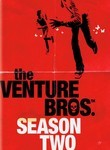
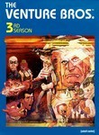
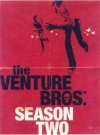

The Venture Bros.
Stephen Klancher
...has seen 65
...has seen 1.1 hours
...has not seen 0.4 hours

Timeline
Most Recent:
Momma's Boys
First Unseen:
Bot Seeks Bot (# 66)
...has seen 65
...has seen 1.1 hours
...has not seen 0.4 hours
Timeline
Most Recent:
Momma's Boys
First Unseen:
Bot Seeks Bot (# 66)


Stephen Klancher: SEEN
Stephen Klancher: SEEN


The Family That Slays Together, Stays Together (1) (2008) Airs on 2008-08-17
S3 - E12 of The Venture Bros.
S3 - E12 of The Venture Bros.
The Family That Slays Together, Stays Together (2) (2008) Airs on 2008-08-24
S3 - E13 of The Venture Bros.
S3 - E13 of The Venture Bros.
Stephen Klancher: October 31, 2009 
Ok, it took me too long to understand the chronology in this episode. It made it very confusing. Maybe I should rewatch it to actually be able to enjoy it. ..."I totally killed Hitler"
From the Ladle to the Grave: The Shallow Gravy Story (2011) Airs on 2011-08-28
S4 - E17 of The Venture Bros.
S4 - E17 of The Venture Bros.
Stephen Klancher: June 28, 2013

The Venture Bros. and the Curse of the Haunted Problem Airs on 2018-08-05
S7 - E1 of The Venture Bros.
S7 - E1 of The Venture Bros.